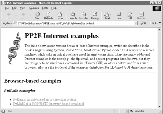
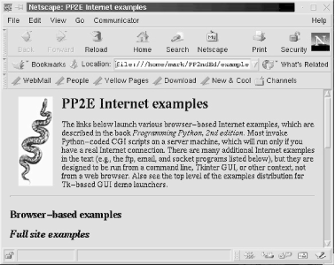
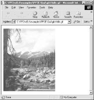

| I l@ve RuBoard |
|
4.6 User-Friendly Program LaunchersSuppose, for just a moment, that you wish to ship Python programs to an audience that may be in the very early stages of evolving from computer user to computer programmer. Maybe you are shipping a Python application to nontechnical users; or perhaps you're interested in shipping a set of cool Python demo programs on a Python book's CD-ROM (see http://examples.oreilly.com/python2). Whatever the reason, some of the people who will use your software can't be expected to do any more than click a mouse -- much less edit their system configuration files to set things like PATH and PYTHONPATH per your programs' assumptions. Your software will have to configure itself. Luckily, Python scripts can do that too. In the next two sections, we're going to see two modules that aim to automatically launch programs with minimal assumptions about the environment on the host machine:
Both of these modules are designed to be reusable in any context where you want your software to be user-friendly. By searching for files and configuring environments automatically, your users can avoid (or at least postpone) having to learn the intricacies of environment configuration. 4.6.1 Launcher Module ClientsThe two modules in this section see action in many of this book's examples. In fact, we've already used some of these tools. The launchmodes script we met at the end of the prior chapter imported Launcher functions to hunt for the local python.exe interpreter's path, needed by os.spawnv calls. That script could have assumed that everyone who installs it on their machine will edit its source code to add their own Python location; but the technical know-how required for even that task is already light-years beyond many potential users.[4] It's much nicer to invest a negligible amount of startup time to locate Python automatically.
The two modules listed in Examples Example 4-14 and Example 4-15, together with launchmodes, also form the core of the demo-launcher programs at the top of the examples distribution on this book's CD (see http://examples.oreilly.com/python2). There's nothing quite like being able to witness programs in action first-hand, so I wanted to make it as easy as possible to launch Python examples in the book. Ideally, they should run straight off the CD when clicked, and not require readers to wade through a complex environment installation procedure. However, many demos perform cross-directory imports, and so require the book's module package directories to be installed in PYTHONPATH; it is not enough just to click on some programs' icons at random. Moreover, when first starting out, users can't be assumed to have added the Python executable to their system search path either; the name "python" might not mean anything in the shell. At least on platforms tested thus far, the following modules solve such configuration problems. For example, script Launch_PyDemos.pyw in the root directory automatically configures the system and Python execution environments using Launcher.py tools, and then spawns PyDemos.py, a Tkinter GUI Demo interface we'll meet later in this book. PyDemos in turn uses launchmodes to spawn other programs, that also inherit the environment settings made at the top. The net effect is that clicking any of the Launch_* scripts starts Python programs even if you haven't touched your environment settings at all. You still need to install Python if it's not present, of course, but the Python Windows self-installer is a simple point-and-click affair too. Because searches and configuration take extra time, it's still to your advantage to eventually configure your environment settings and run programs like PyDemos directly, instead of through the launcher scripts. But there's much to be said for instant gratification when it comes to software. These tools will show up in other contexts later in this text, too. For instance, the PyMail email interface we'll meet in Chapter 11 uses Launcher to locate its own source code file; since it's impossible to know what directory it will be run from, the best it can do is search. Another GUI example, big_gui, will use a similar Launcher tool to locate canned Python source-distribution demo programs in arbitrary and unpredictable places on the underlying computer. The LaunchBrowser script in Example 4-15 also uses Launcher to locate suitable web browsers, and is itself used to start Internet demos in the PyDemos and PyGadgets launcher GUIs -- that is, Launcher starts PyDemos, which starts LaunchBrowser, which uses Launcher. By optimizing generality, these modules also optimize reusability. 4.6.2 Launching Programs Without Environment SettingsBecause the Launcher.py file is heavily documented, I won't go over its fine points in narrative here. Instead, I'll just point out that all of its functions are useful by themselves, but the main entry point is the launchBookExamples function near the end; you need to work your way from the bottom of this file up to glimpse its larger picture. The launchBookExamples function uses all the others, to configure the environment and then spawn one or more programs to run in that environment. In fact, the top-level demo launcher scripts shown in Examples Example 4-12 and Example 4-13 do nothing more than ask this function to spawn GUI demo interface programs we'll meet later (e.g., PyDemos.pyw, PyGadgets_bar.pyw). Because the GUIs are spawned indirectly through this interface, all programs they spawn inherit the environment configurations too. Example 4-12. PP2E\Launch_PyDemos.pyw#!/bin/env python ############################################### # PyDemos + environment search/config first # run this if you haven't setup your paths yet # you still must install Python first, though ############################################### import Launcher Launcher.launchBookExamples(['PyDemos.pyw'], 0) Example 4-13. PP2E\Launch_PyGadgets_bar.pyw#!/bin/env python ################################################## # PyGadgets_bar + environment search/config first # run this if you haven't setup your paths yet # you still must install Python first, though ################################################## import Launcher Launcher.launchBookExamples(['PyGadgets_bar.pyw'], 0) When run directly, PyDemos.pyw and PyGadgets_bar.pyw instead rely on the configuration settings on the underlying machine. In other words, Launcher effectively hides configuration details from the GUI interfaces, by enclosing them in a configuration program layer. To understand how, study Example 4-14. Example 4-14. PP2E\Launcher.py#!/usr/bin/env python
"""
----------------------------------------------------------------------------
Tools to find files, and run Python demos even if your environment has
not been manually configured yet. For instance, provided you have already
installed Python, you can launch Tk demos directly off the book's CD by
double-clicking this file's icon, without first changing your environment
config files. Assumes Python has been installed first (double-click on the
python self-install exe on the CD), and tries to guess where Python and the
examples distribution live on your machine. Sets Python module and system
search paths before running scripts: this only works because env settings
are inherited by spawned programs on both windows and linux. You may want
to tweak the list of directories searched for speed, and probably want to
run one of the Config/setup-pp files at startup time to avoid this search.
This script is friendly to already-configured path settings, and serves to
demo platform-independent directory path processing. Python programs can
always be started under the Windows port by clicking (or spawning a 'start'
DOS command), but many book examples require the module search path too.
----------------------------------------------------------------------------
"""
import sys, os, string
def which(program, trace=1):
"""
Look for program in all dirs in the system's search
path var, PATH; return full path to program if found,
else None. Doesn't handle aliases on Unix (where we
could also just run a 'which' shell cmd with os.popen),
and it might help to also check if the file is really
an executable with os.stat and the stat module, using
code like this: os.stat(filename)[stat.ST_MODE] & 0111
"""
try:
ospath = os.environ['PATH']
except:
ospath = '' # okay if not set
systempath = string.split(ospath, os.pathsep)
if trace: print 'Looking for', program, 'on', systempath
for sysdir in systempath:
filename = os.path.join(sysdir, program) # adds os.sep between
if os.path.isfile(filename): # exists and is a file?
if trace: print 'Found', filename
return filename
else:
if trace: print 'Not at', filename
if trace: print program, 'not on system path'
return None
def findFirst(thisDir, targetFile, trace=0):
"""
Search directories at and below thisDir for a file
or dir named targetFile. Like find.find in standard
lib, but no name patterns, follows unix links, and
stops at the first file found with a matching name.
targetFile must be a simple base name, not dir path.
"""
if trace: print 'Scanning', thisDir
for filename in os.listdir(thisDir): # skip . and ..
if filename in [os.curdir, os.pardir]: # just in case
continue
elif filename == targetFile: # check name match
return os.path.join(thisDir, targetFile) # stop at this one
else:
pathname = os.path.join(thisDir, filename) # recur in subdirs
if os.path.isdir(pathname): # stop at 1st match
below = findFirst(pathname, targetFile, trace)
if below: return below
def guessLocation(file, isOnWindows=(sys.platform[:3]=='win'), trace=1):
"""
Try to find directory where file is installed
by looking in standard places for the platform.
Change tries lists as needed for your machine.
"""
cwd = os.getcwd( ) # directory where py started
tryhere = cwd + os.sep + file # or os.path.join(cwd, file)
if os.path.exists(tryhere): # don't search if it is here
return tryhere # findFirst(cwd,file) descends
if isOnWindows:
tries = []
for pydir in [r'C:\Python20', r'C:\Program Files\Python']:
if os.path.exists(pydir):
tries.append(pydir)
tries = tries + [cwd, r'C:\Program Files']
for drive in 'CGDEF':
tries.append(drive + ':\\')
else:
tries = [cwd, os.environ['HOME'], '/usr/bin', '/usr/local/bin']
for dir in tries:
if trace: print 'Searching for %s in %s' % (file, dir)
try:
match = findFirst(dir, file)
except OSError:
if trace: print 'Error while searching', dir # skip bad drives
else:
if match: return match
if trace: print file, 'not found! - configure your environment manually'
return None
PP2EpackageRoots = [ # python module search path
#'%sPP2E' % os.sep, # pass in your own elsewhere
''] # '' adds examplesDir root
def configPythonPath(examplesDir, packageRoots=PP2EpackageRoots, trace=1):
"""
Setup the Python module import search-path directory
list as necessary to run programs in the book examples
distribution, in case it hasn't been configured already.
Add examples package root, plus nested package roots.
This corresponds to the setup-pp* config file settings.
os.environ assignments call os.putenv internally in 1.5,
so these settings will be inherited by spawned programs.
Python source lib dir and '.' are automatically searched;
unix|win os.sep is '/' | '\\', os.pathsep is ':' | ';'.
sys.path is for this process only--must set os.environ.
adds new dirs to front, in case there are two installs.
could also try to run platform's setup-pp* file in this
process, but that's non-portable, slow, and error-prone.
"""
try:
ospythonpath = os.environ['PYTHONPATH']
except:
ospythonpath = '' # okay if not set
if trace: print 'PYTHONPATH start:\n', ospythonpath
addList = []
for root in packageRoots:
importDir = examplesDir + root
if importDir in sys.path:
if trace: print 'Exists', importDir
else:
if trace: print 'Adding', importDir
sys.path.append(importDir)
addList.append(importDir)
if addList:
addString = string.join(addList, os.pathsep) + os.pathsep
os.environ['PYTHONPATH'] = addString + ospythonpath
if trace: print 'PYTHONPATH updated:\n', os.environ['PYTHONPATH']
else:
if trace: print 'PYTHONPATH unchanged'
def configSystemPath(pythonDir, trace=1):
"""
Add python executable dir to system search path if needed
"""
try:
ospath = os.environ['PATH']
except:
ospath = '' # okay if not set
if trace: print 'PATH start', ospath
if (string.find(ospath, pythonDir) == -1 and # not found?
string.find(ospath, string.upper(pythonDir)) == -1): # case diff?
os.environ['PATH'] = ospath + os.pathsep + pythonDir
if trace: print 'PATH updated:', os.environ['PATH']
else:
if trace: print 'PATH unchanged'
def runCommandLine(pypath, exdir, command, isOnWindows=0, trace=1):
"""
Run python command as an independent program/process on
this platform, using pypath as the Python executable,
and exdir as the installed examples root directory.
Need full path to python on windows, but not on unix.
On windows, a os.system('start ' + command) is similar,
except that .py files pop up a dos console box for i/o.
Could use launchmodes.py too but pypath is already known.
"""
command = exdir + os.sep + command # rooted in examples tree
os.environ['PP2E_PYTHON_FILE'] = pypath # export directories for
os.environ['PP2E_EXAMPLE_DIR'] = exdir # use in spawned programs
if trace: print 'Spawning:', command
if isOnWindows:
os.spawnv(os.P_DETACH, pypath, ('python', command))
else:
cmdargs = [pypath] + string.split(command)
if os.fork( ) == 0:
os.execv(pypath, cmdargs) # run prog in child process
def launchBookExamples(commandsToStart, trace=1):
"""
Toplevel entry point: find python exe and
examples dir, config env, spawn programs
"""
isOnWindows = (sys.platform[:3] == 'win')
pythonFile = (isOnWindows and 'python.exe') or 'python'
examplesFile = 'README-PP2E.txt'
if trace:
print os.getcwd( ), os.curdir, os.sep, os.pathsep
print 'starting on %s...' % sys.platform
# find python executable: check system path, then guess
pypath = which(pythonFile) or guessLocation(pythonFile, isOnWindows)
assert pypath
pydir, pyfile = os.path.split(pypath) # up 1 from file
if trace:
print 'Using this Python executable:', pypath
raw_input('Press <enter> key')
# find examples root dir: check cwd and others
expath = guessLocation(examplesFile, isOnWindows)
assert expath
updir = string.split(expath, os.sep)[:-2] # up 2 from file
exdir = string.join(updir, os.sep) # to PP2E pkg parent
if trace:
print 'Using this examples root directory:', exdir
raw_input('Press <enter> key')
# export python and system paths if needed
configSystemPath(pydir)
configPythonPath(exdir)
if trace:
print 'Environment configured'
raw_input('Press <enter> key')
# spawn programs
for command in commandsToStart:
runCommandLine(pypath, os.path.dirname(expath), command, isOnWindows)
if __name__ == '__main__':
#
# if no args, spawn all in the list of programs below
# else rest of cmd line args give single cmd to be spawned
#
if len(sys.argv) == 1:
commandsToStart = [
'Gui/TextEditor/textEditor.pyw', # either slash works
'Lang/Calculator/calculator.py', # os normalizes path
'PyDemos.pyw',
#'PyGadgets.py',
'echoEnvironment.pyw'
]
else:
commandsToStart = [ string.join(sys.argv[1:], ' ') ]
launchBookExamples(commandsToStart)
import time
if sys.platform[:3] == 'win': time.sleep(10) # to read msgs if clicked
One way to understand the Launcher script is to trace the messages it prints along the way. When run by itself without a PYTHONPATH setting, the script finds a suitable Python and the examples root directory (by hunting for its README file), uses those results to configure PATH and PYTHONPATH settings if needed, and spawns a precoded list of program examples. To illustrate, here is a launch on Windows with an empty PYTHONPATH: C:\temp\examples>set PYTHONPATH= C:\temp\examples>python Launcher.py C:\temp\examples . \ ; starting on win32... Looking for python.exe on ['C:\\WINDOWS', 'C:\\WINDOWS', 'C:\\WINDOWS\\COMMAND', 'C:\\STUFF\\BIN.MKS', 'C:\\PROGRAM FILES\\PYTHON'] Not at C:\WINDOWS\python.exe Not at C:\WINDOWS\python.exe Not at C:\WINDOWS\COMMAND\python.exe Not at C:\STUFF\BIN.MKS\python.exe Found C:\PROGRAM FILES\PYTHON\python.exe Using this Python executable: C:\PROGRAM FILES\PYTHON\python.exe Press <enter> key Using this examples root directory: C:\temp\examples Press <enter> key PATH start C:\WINDOWS;C:\WINDOWS;C:\WINDOWS\COMMAND;C:\STUFF\BIN.MKS; C:\PROGRAM FILES\PYTHON PATH unchanged PYTHONPATH start: Adding C:\temp\examples\Part3 Adding C:\temp\examples\Part2 Adding C:\temp\examples\Part2\Gui Adding C:\temp\examples PYTHONPATH updated: C:\temp\examples\Part3;C:\temp\examples\Part2;C:\temp\examples\Part2\Gui; C:\temp\examples; Environment configured Press <enter> key Spawning: C:\temp\examples\Part2/Gui/TextEditor/textEditor.pyw Spawning: C:\temp\examples\Part2/Lang/Calculator/calculator.py Spawning: C:\temp\examples\PyDemos.pyw Spawning: C:\temp\examples\echoEnvironment.pyw Four programs are spawned with PATH and PYTHONPATH preconfigured according to the location of your Python interpreter program, the location of your examples distribution tree, and the list of required PYTHONPATH entries in script variable PP2EpackageRoots.
When used by the PyDemos launcher script, Launcher does not pause for key presses along the way (the trace argument is passed in false). Here is the output generated when using the module to launch PyDemos with PYTHONPATH already set to include all the required directories; the script both avoids adding settings redundantly, and retains any exiting settings already in your environment: C:\PP2ndEd\examples>python Launch_PyDemos.pyw Looking for python.exe on ['C:\\WINDOWS', 'C:\\WINDOWS', 'C:\\WINDOWS\\COMMAND', 'C:\\STUFF\\BIN.MKS', 'C:\\PROGRAM FILES\\PYTHON'] Not at C:\WINDOWS\python.exe Not at C:\WINDOWS\python.exe Not at C:\WINDOWS\COMMAND\python.exe Not at C:\STUFF\BIN.MKS\python.exe Found C:\PROGRAM FILES\PYTHON\python.exe PATH start C:\WINDOWS;C:\WINDOWS;C:\WINDOWS\COMMAND;C:\STUFF\BIN.MKS; C:\PROGRAM FILES\PYTHON PATH unchanged PYTHONPATH start: C:\PP2ndEd\examples\Part3;C:\PP2ndEd\examples\Part2;C:\PP2ndEd\examples\ Part2\Gui;C:\PP2ndEd\examples Exists C:\PP2ndEd\examples\Part3 Exists C:\PP2ndEd\examples\Part2 Exists C:\PP2ndEd\examples\Part2\Gui Exists C:\PP2ndEd\examples PYTHONPATH unchanged Spawning: C:\PP2ndEd\examples\PyDemos.pyw And finally, here is the trace output of a launch on my Linux system; because Launcher is written with portable Python code and library calls, environment configuration and directory searches work just as well there: [mark@toy ~/PP2ndEd/examples]$ unsetenv PYTHONPATH [mark@toy ~/PP2ndEd/examples]$ python Launcher.py /home/mark/PP2ndEd/examples . / : starting on linux2... Looking for python on ['/home/mark/bin', '.', '/usr/bin', '/usr/bin', '/usr/local/ bin', '/usr/X11R6/bin', '/bin', '/usr/X11R6/bin', '/home/mark/ bin', '/usr/X11R6/bin', '/home/mark/bin', '/usr/X11R6/bin'] Not at /home/mark/bin/python Not at ./python Found /usr/bin/python Using this Python executable: /usr/bin/python Press <enter> key Using this examples root directory: /home/mark/PP2ndEd/examples Press <enter> key PATH start /home/mark/bin:.:/usr/bin:/usr/bin:/usr/local/bin:/usr/X11R6/bin:/bin:/ usr /X11R6/bin:/home/mark/bin:/usr/X11R6/bin:/home/mark/bin:/usr/X11R6/bin PATH unchanged PYTHONPATH start: Adding /home/mark/PP2ndEd/examples/Part3 Adding /home/mark/PP2ndEd/examples/Part2 Adding /home/mark/PP2ndEd/examples/Part2/Gui Adding /home/mark/PP2ndEd/examples PYTHONPATH updated: /home/mark/PP2ndEd/examples/Part3:/home/mark/PP2ndEd/examples/Part2:/home/ mark/PP2ndEd/examples/Part2/Gui:/home/mark/PP2ndEd/examples: Environment configured Press <enter> key Spawning: /home/mark/PP2ndEd/examples/Part2/Gui/TextEditor/textEditor.py Spawning: /home/mark/PP2ndEd/examples/Part2/Lang/Calculator/calculator.py Spawning: /home/mark/PP2ndEd/examples/PyDemos.pyw Spawning: /home/mark/PP2ndEd/examples/echoEnvironment.pyw In all of these launches, the Python interpreter was found on the system search-path, so no real searches were performed (the "Not at" lines near the top represent the module's which function). In a moment, we'll also use the Launcher's which and guessLocation functions to look for web browsers in a way that kicks off searches in standard install directory trees. Later in the book, we'll use this module in other ways -- for instance, to search for demo programs and source code files somewhere on the machine, with calls of this form: C:\temp>python
>>> from PP2E.Launcher import guessLocation
>>> guessLocation('hanoi.py')
Searching for hanoi.py in C:\Program Files\Python
Searching for hanoi.py in C:\temp\examples
Searching for hanoi.py in C:\Program Files
Searching for hanoi.py in C:\
'C:\\PP2ndEd\\cdrom\\Python1.5.2\\SourceDistribution\\Unpacked\\Python-1.5.2
\\Demo\\tkinter\\guido\\hanoi.py'
>>> from PP2E.Launcher import findFirst
>>> findFirst('.', 'PyMailGui.py')
'.\\examples\\Internet\\Email\\PyMailGui.py'
Such searches aren't necessary if you can rely on an environment variable to give at least part of the path to a file; for instance, paths scripts within the PP2E examples tree can be named by joining the PP2EHOME shell variable, with the rest of the script's path (assuming the rest of the script's path won't change, and we can rely on that shell variable being set everywhere). Some scripts may also be able to compose relative paths to other scripts using the sys.path[0] home-directory indicator added for imports (see Section 2.7). But in cases where a file can appear at arbitrary places, searches like those shown previously are sometimes the best scripts can do. The earlier hanoi.py program file, for example, can be anywhere on the underlying machine (if present at all); searching is a more user-friendly final alternative than simply giving up.
4.6.3 Launching Web Browsers PortablyWeb browsers can do amazing things these days. They can serve as document viewers, remote program launchers, database interfaces, media players, and more. Being able to open a browser on a local or remote page file from within a script opens up all kinds of interesting user-interface possibilities. For instance, a Python system might automatically display its HTML-coded documentation when needed, by launching the local web browser on the appropriate page file.[5] Because most browsers know how to present pictures, audio files, and movie clips, opening a browser on such a file is also a simple way for scripts to deal with multimedia.
The last script listed in this chapter is less ambitious than Launcher.py, but equally reusable: LaunchBrowser.py attempts to provide a portable interface for starting a web browser. Because techniques for launching browsers vary per platform, this script provides an interface that aims to hide the differences from callers. Once launched, the browser runs as an independent program, and may be opened to view either a local file or a remote page on the Web. Here's how it works. Because most web browsers can be started with shell command lines, this script simply builds and launches one as appropriate. For instance, to run a Netscape browser on Linux, a shell command of the form netscape url is run, where url begins with "file://" for local files, and "http://" for live remote-page accesses (this is per URL conventions we'll meet in more detail later, in Chapter 12). On Windows, a shell command like start url achieves the same goal. Here are some platform-specific highlights:
All of this is easily customized (this is Python code, after all), and you may need to add additional logic for other platforms. But on all of my machines, the script makes reasonable assumptions that allow me to largely forget most of the platform-specific bits previously discussed; I just call the same launchBrowser function everywhere. For more details, let's look at Example 4-15. Example 4-15. PP2E\LaunchBrowser.py#!/bin/env python
#################################################################
# Launch a web browser to view a web page, portably. If run
# in '-live' mode, assumes you have a Internet feed and opens
# a page at a remote site. Otherwise, assumes the page is a
# full file path name on your machine, and opens the page file
# locally. On Unix/Linux, finds first browser on your $PATH.
# On Windows, tries DOS "start" command first, or searches for
# the location of a browser on your machine for os.spawnv by
# checking PATH and common Windows executable directories. You
# may need to tweak browser executable name/dirs if this fails.
# This has only been tested in Win98 and Linux, so you may need
# to add more code for other machines (mac: ic.launcurl(url)?).
#################################################################
import os, sys
from Launcher import which, guessLocation # file search utilities
useWinStart = 1 # 0=ignore name associations
onWindows = sys.platform[:3] == 'win'
helptext = "Usage: LaunchBrowser.py [ -file path | -live path site ]"
#browser = r'c:\"Program Files"\Netscape\Communicator\Program\netscape.exe'
# defaults
Mode = '-file'
Page = os.getcwd( ) + '/Internet/Cgi-Web/PyInternetDemos.html'
Site = 'starship.python.net/~lutz'
def launchUnixBrowser(url, verbose=1): # add your platform if unique
tries = ['netscape', 'mosaic', 'lynx'] # order your preferences here
for program in tries:
if which(program): break # find one that is on $path
else:
assert 0, 'Sorry - no browser found'
if verbose: print 'Running', program
os.system('%s %s &' % (program, url)) # or fork+exec; assumes $path
def launchWindowsBrowser(url, verbose=1):
if useWinStart and len(url) <= 400: # on windows: start or spawnv
try: # spawnv works if cmd too long
if verbose: print 'Starting'
os.system('start ' + url) # try name associations first
return # fails if cmdline too long
except: pass
browser = None # search for a browser exe
tries = ['IEXPLORE.EXE', 'netscape.exe'] # try explorer, then netscape
for program in tries:
browser = which(program) or guessLocation(program, 1)
if browser: break
assert browser != None, 'Sorry - no browser found'
if verbose: print 'Spawning', browser
os.spawnv(os.P_DETACH, browser, (browser, url))
def launchBrowser(Mode='-file', Page=Page, Site=None, verbose=1):
if Mode == '-live':
url = 'http://%s/%s' % (Site, Page) # open page at remote site
else:
url = 'file://%s' % Page # open page on this machine
if verbose: print 'Opening', url
if onWindows:
launchWindowsBrowser(url, verbose) # use windows start, spawnv
else:
launchUnixBrowser(url, verbose) # assume $path on unix, linux
if __name__ == '__main__':
# get command-line args
argc = len(sys.argv)
if argc > 1: Mode = sys.argv[1]
if argc > 2: Page = sys.argv[2]
if argc > 3: Site = sys.argv[3]
if Mode not in ['-live', '-file']:
print helptext
sys.exit(1)
else:
launchBrowser(Mode, Page, Site)
4.6.3.1 Launching browsers with command linesThis module is designed to be both run and imported. When run by itself on my Windows machine, Internet Explorer starts up. The requested page file is always displayed in a new browser window when os.spawnv is applied, but in the currently open browser window (if any) when running a start command: C:\...\PP2E>python LaunchBrowser.py Opening file://C:\PP2ndEd\examples\PP2E/Internet/Cgi-Web/PyInternetDemos.html Starting The seemingly odd mix of forward and backward slashes in the URL here works fine within the browser; it pops up the window shown in Figure 4-2. Figure 4-2. Launching a Windows browser on a local fileBy default, a start command is spawned; to see the browser search procedure in action on Windows, set the script's useWinStart variable to 0. The script will search for a browser on your PATH settings, and then in common Windows install directories hardcoded in Launcher.py : C:\...\PP2E>python LaunchBrowser.py
-file C:\Stuff\Website\public_html\about-pp.html
Opening file://C:\Stuff\Website\public_html\about-pp.html
Looking for IEXPLORE.EXE on ['C:\\WINDOWS', 'C:\\WINDOWS',
'C:\\WINDOWS\\COMMAND', 'C:\\STUFF\\BIN.MKS', 'C:\\PROGRAM FILES\\PYTHON']
Not at C:\WINDOWS\IEXPLORE.EXE
Not at C:\WINDOWS\IEXPLORE.EXE
Not at C:\WINDOWS\COMMAND\IEXPLORE.EXE
Not at C:\STUFF\BIN.MKS\IEXPLORE.EXE
Not at C:\PROGRAM FILES\PYTHON\IEXPLORE.EXE
IEXPLORE.EXE not on system path
Searching for IEXPLORE.EXE in C:\Program Files\Python
Searching for IEXPLORE.EXE in C:\PP2ndEd\examples\PP2E
Searching for IEXPLORE.EXE in C:\Program Files
Spawning C:\Program Files\Internet Explorer\IEXPLORE.EXE
If you study these trace message you'll notice that the browser wasn't on the system search path, but was eventually located in a local C:\Program Files subdirectory -- this is just the Launcher module's which and guessLocation functions at work. As coded, the script searches for Internet Explorer first; if that's not to your liking, try changing the script's tries list to make Netscape first: C:\...\PP2E>python LaunchBrowser.py Opening file://C:\PP2ndEd\examples\PP2E/Internet/Cgi-Web/PyInternetDemos.html Looking for netscape.exe on ['C:\\WINDOWS', 'C:\\WINDOWS', 'C:\\WINDOWS\\COMMAND', 'C:\\STUFF\\BIN.MKS', 'C:\\PROGRAM FILES\\PYTHON'] Not at C:\WINDOWS\netscape.exe Not at C:\WINDOWS\netscape.exe Not at C:\WINDOWS\COMMAND\netscape.exe Not at C:\STUFF\BIN.MKS\netscape.exe Not at C:\PROGRAM FILES\PYTHON\netscape.exe netscape.exe not on system path Searching for netscape.exe in C:\Program Files\Python Searching for netscape.exe in C:\PP2ndEd\examples\PP2E Searching for netscape.exe in C:\Program Files Spawning C:\Program Files\Netscape\Communicator\Program\netscape.exe Here, the script eventually found Netscape in a different install directory on the local machine. Besides automatically finding a user's browser for them, this script also aims to be portable. When running this file unchanged on Linux, the local Netscape browser starts, if it lives on your PATH; otherwise, others are tried: [mark@toy ~/PP2ndEd/examples/PP2E]$ python LaunchBrowser.py Opening file:///home/mark/PP2ndEd/examples/PP2E/Internet/Cgi- Web/PyInternetDemos.html Looking for netscape on ['/home/mark/bin', '.', '/usr/bin', '/usr/bin', '/usr/local/bin', '/usr/X11R6/bin', '/bin', '/usr/X11R6/bin', '/home/mark/ bin', '/usr/X11R6/bin', '/home/mark/bin', '/usr/X11R6/bin'] Not at /home/mark/bin/netscape Not at ./netscape Found /usr/bin/netscape Running netscape [mark@toy ~/PP2ndEd/examples/PP2E]$ I have Netscape installed, so running the script this way on my machine generates the window shown in Figure 4-3, seen under the KDE window manager. Figure 4-3. Launching a browser on LinuxIf you have an Internet connection, you can open pages at remote servers too -- the next command opens the root page at my site on the starship.python.netserver, located somewhere on the East Coast the last time I checked: C:\...\PP2E>python LaunchBrowser.py -live ~lutz starship.python.net Opening http://starship.python.net/~lutz Starting In Chapter 8, we'll see that this script is also run to start Internet examples in the top-level demo launcher system: the PyDemos script presented in that chapter portably opens local or remote web page files with this button-press callback: [File mode]
pagepath = os.getcwd( ) + '/Internet/Cgi-Web'
demoButton('PyErrata',
'Internet-based errata report system',
'LaunchBrowser.py -file %s/PyErrata/pyerrata.html' % pagepath)
[Live mode]
site = 'starship.python.net/~lutz'
demoButton('PyErrata',
'Internet-based errata report system',
'LaunchBrowser.py -live PyErrata/pyerrata.html ' + site)
4.6.3.2 Launching browsers with function callsOther programs can spawn LaunchBrowser.py command lines like those shown previously with tools like os.system, as usual; but since the script's core logic is coded in a function, it can just as easily be imported and called: >>> from PP2E.LaunchBrowser import launchBrowser >>> launchBrowser(Page=r'C:\Stuff\Website\Public_html\about-pp.html') Opening file://C:\Stuff\Website\Public_html\about-pp.html Starting >>> When called like this, launchBrowser isn't much different from spawning a start command on DOS or a netscape command on Linux, but the Python launchBrowser function is designed to be a portable interface for browser startup across platforms. Python scripts can use this interface to pop up local HTML documents in web browsers; on machines with live Internet links, this call even lets scripts open browsers on remote pages on the Web: >>> launchBrowser(Mode='-live', Page='index.html', Site='www.python.org') Opening http://www.python.org/index.html Starting >>> launchBrowser(Mode='-live', Page='~lutz/PyInternetDemos.html', ... Site='starship.python.net') Opening http://starship.python.net/~lutz/PyInternetDemos.html Starting On my computer, the first call here opens a new Internet Explorer GUI window if needed, dials out through my modem, and fetches the Python home page from http://www.python.org on both Windows and Linux -- not bad for a single function call. The second call does the same, but with a web demos page we'll explore later. 4.6.3.3 A Python "multimedia extravaganza"I mentioned earlier that browsers are a cheap way to present multimedia. Alas, this sort of thing is best viewed live, so the best I can do is show startup commands here. The next command line and function call, for example, display two GIF images in Internet Explorer on my machine (be sure to use full local pathnames). The result of the first of these is captured in Figure 4-4. C:\...\PP2E>python LaunchBrowser.py
-file C:\PP2ndEd\examples\PP2E\Gui\gifs\hills.gif
Opening file://C:\PP2ndEd\examples\PP2E\Gui\gifs\hills.gif
Starting
C:\temp>python
>>> from LaunchBrowser import launchBrowser
>>> launchBrowser(Page=r'C:\PP2ndEd\examples\PP2E\Gui\gifs\mp_lumberjack.gif')
Opening file://C:\PP2ndEd\examples\PP2E\Gui\gifs\mp_lumberjack.gif
Starting
Figure 4-4. Launching a browser on an image fileThe next command line and call open the sousa.au audio file on my machine too; the second of these downloads the file from http://www.python.org first. If all goes as planned, they'll make the Monty Python theme song play on your computer too: C:\PP2ndEd\examples>python LaunchBrowser.py
-file C:\PP2ndEd\examples\PP2E\Internet\Ftp\sousa.au
Opening file://C:\PP2ndEd\examples\PP2E\Internet\Ftp\sousa.au
Starting
>>> launchBrowser(Mode='-live',
... Site='www.python.org',
... Page='ftp/python/misc/sousa.au',
... verbose=0)
>>>
Of course, you could just pass these filenames to a spawned start command on Windows, or run the appropriate handler program directly with something like os.system. But opening these files in a browser is a more portable approach -- you don't need to keep track of a set of file-handler programs per platform. Provided your scripts use a portable browser launcher like LaunchBrowser, you don't even need to keep track of a browser per platform. In closing, I want to point out that LaunchBrowser reflects browsers that I tend to use. For instance, it tries to find Internet Explorer before Netscape on Windows, and prefers Netscape over Mosaic and Lynx on Linux, but you should feel free to change these choices in your copy of the script. In fact, both LaunchBrowser and Launcher make a few heuristic guesses when searching for files that may not make sense on every computer. As always, hack on; this is Python, after all.
|
| I l@ve RuBoard |
|